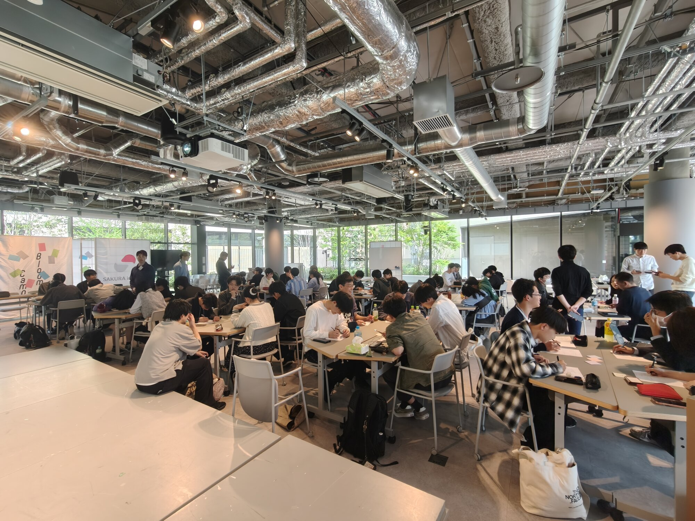
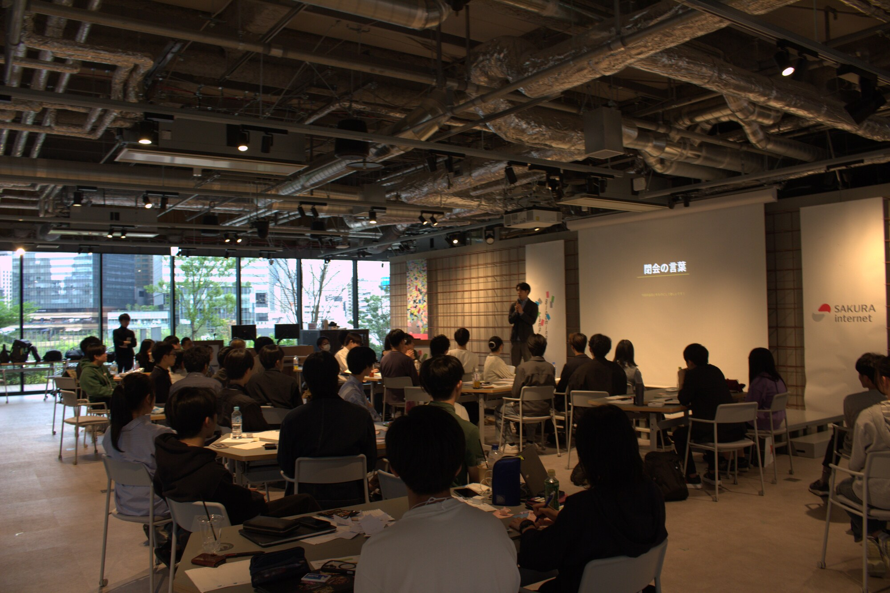
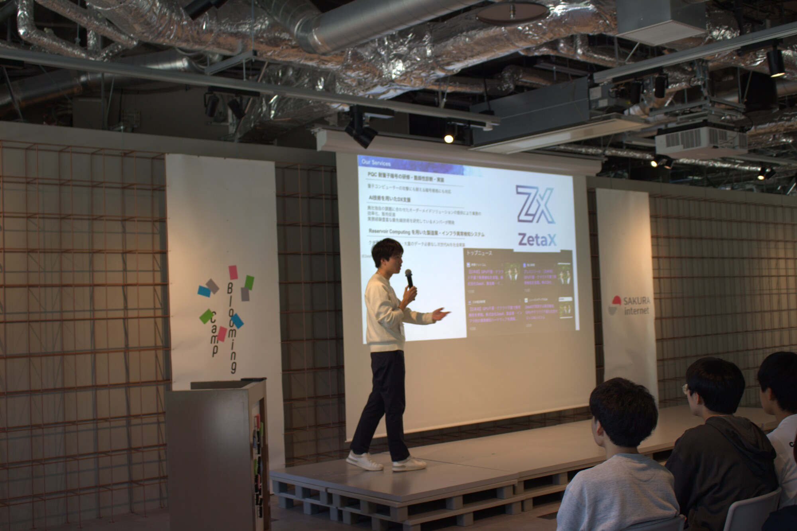
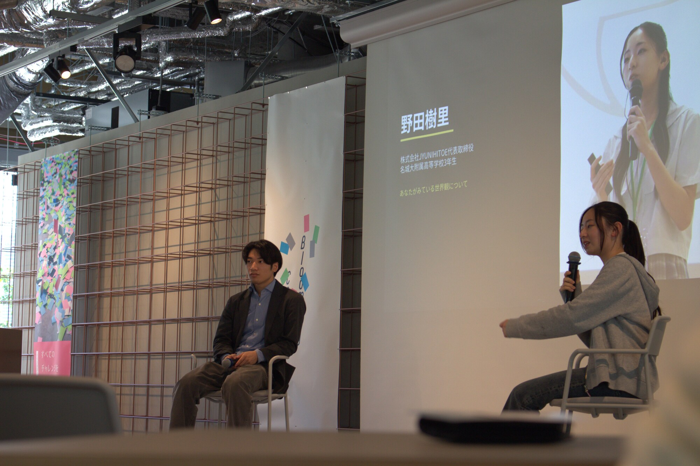
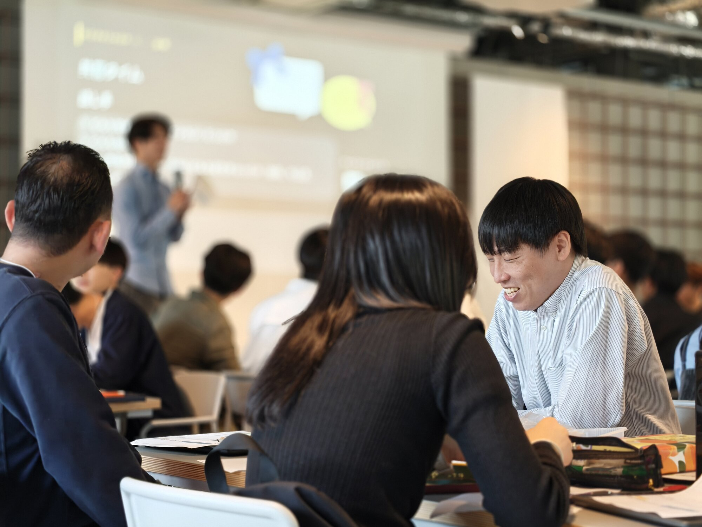
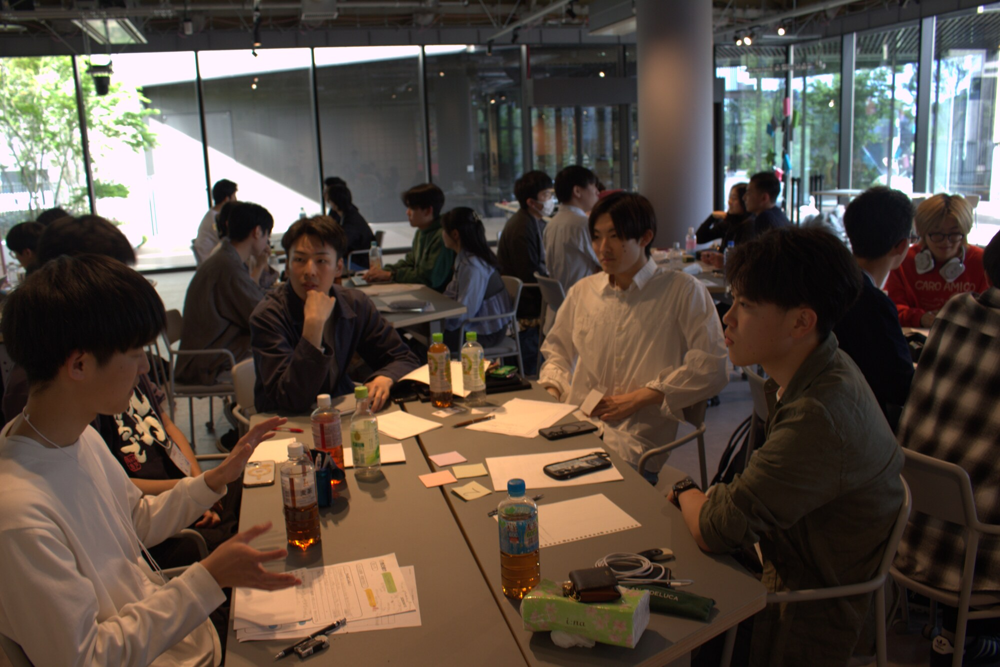
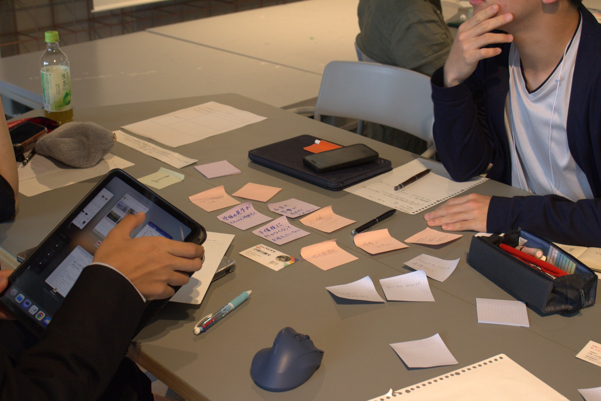

2026年4月12日、学生団体CrossEd主催のイベント「BETWeeN」をグラングリーン大阪北館 Blooming Camp にて開催しました。
このイベントでは、企業の第一線で活躍されている社会人と未来を切り開く進学校の学生、学生起業家の3者が立場や世代を超えて交差する場所を作りました。
灘、開成、西大和学園などの学生と起業に挑む学生など、様々なバックグラウンドを持つ 63 名にご参加いただきました。本記事では当日の様子と参加者の声をお届けします。
また、本イベントの一番の趣旨は、進学校の子たちが社会に出て社会的な活動をするきっかけになっています。
なぜこのイベントを開いたのかは以下のnoteを見てみてください。
https://note.com/super_yak2779/n/n41b7c871949a
※ 本記事は主催者によって書かれています。

会場となった グラングリーン大阪 北館 Blooming Camp に、社会人・進学校の学生・学生起業家という多彩なバックグラウンドを持つ方々が集まりました。インダストリアルな空間が、普段交わることのない3者の対話にちょうど良い距離感を生み出していました。

定刻に、参加者が集い代表の井上悠理による挨拶と今日のイベントへの思いを共有しました。
進学校の学生も学生起業家も、社会人もすべて関係なく対話していく時間にして、楽しんでいこうと話しました。

第一部では歌崎雅弘 氏による「教育の未分化」というテーマで話していただきました。勉強も探究も実は突き詰めれば、試行錯誤して自分の引き出しから方法を試してベストを尽くすという点で全く一緒であるという話をしていただきました。
第二部では佐藤陽 氏による「行動力について」というテーマでお話をしていただきました。行動力にもいくつか種類があり、「仮説検証をする力」「頭を使う力」「批判的に見る力」の3つを話していただきました。
第三部では小助川晴大 氏による「成長において大切なこと」というテーマで普段活動する中で意識していることを語っていただきました。特に「素直」「謙虚」「笑顔」の3つと行動力がすべてであるという話が参加者の心を打っていました。

パネルセッションでは、株式会社JYUNIHITOE代表取締役の野田樹里さんにお越しいただき、起業のきっかけと前と後で変わったこと、そしてまだやりたいことが見つからない子へのメッセージといったことを話していただきました！

充実体験シートというワークシートをもとに、自分が充実していた時の経験をもとに自分は何を楽しんで何に興味があるのかを振り返る自己分析を行いました。またそれをグループ内で相互に発表することで他者理解も深める時間となりました！

このワークショップでは、東大の地理の問題を解く時間となりました。このワークショップの狙いは、探究している、起業している子たちと進学校の子たちの考え方の違いを浮き彫りにさせる意図がありました。

このワークショップでは、進学校の子たちのアイデアを中心に、もしグループで何か一つプロジェクトを進めていくのならどのようなプロジェクトを立てて、それに向かってどのような行動をしていくのかというワークショップを行いました！
このワークショップは、今回のイベントの一番の目的である、進学校の子たちが起業や探究をするにあたってのきっかけという役割を果たしていました！
ネットワーキングでは社会人と学生、進学校の子たち、起業している学生が溶け込んでそれぞれで立ち話をして、それ以降の活動を一緒にしていこうなどの交流を深めていき、とても有意義な時間になりました。
※ 所属・役職はご参加時点のもの
※ その他、首都圏・関西圏の進学校よりご参加
※ 実際に事業を立ち上げている学生を中心にご参加
「BETWeeN」というイベント名には、世代・立場・分野——あらゆる境界の「あいだ」に対話の場をつくりたい、という想いを込めています。
今回、NTT ご所属の方から、進学校の高校生、起業に挑む大学生まで、これほど多様な方々が一つの場に集い、率直に語り合えたことは、私たちにとっても大きな収穫となりました。
学生団体 CrossEd では、今後もこのような対話の場を継続的に企画してまいります。次回の開催にも、ぜひご期待ください。